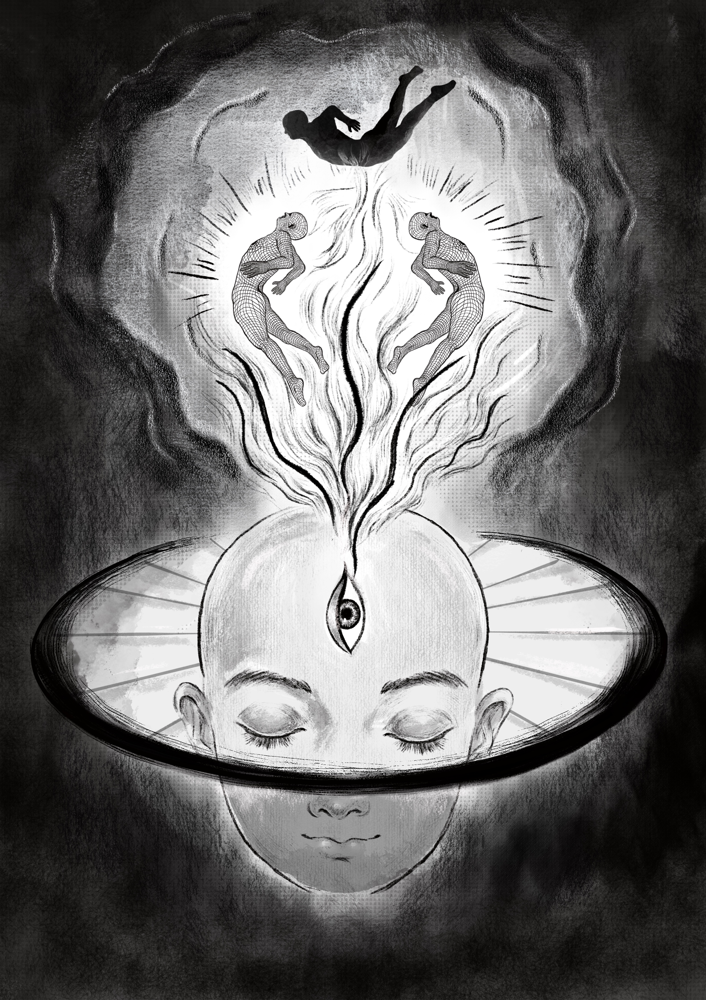
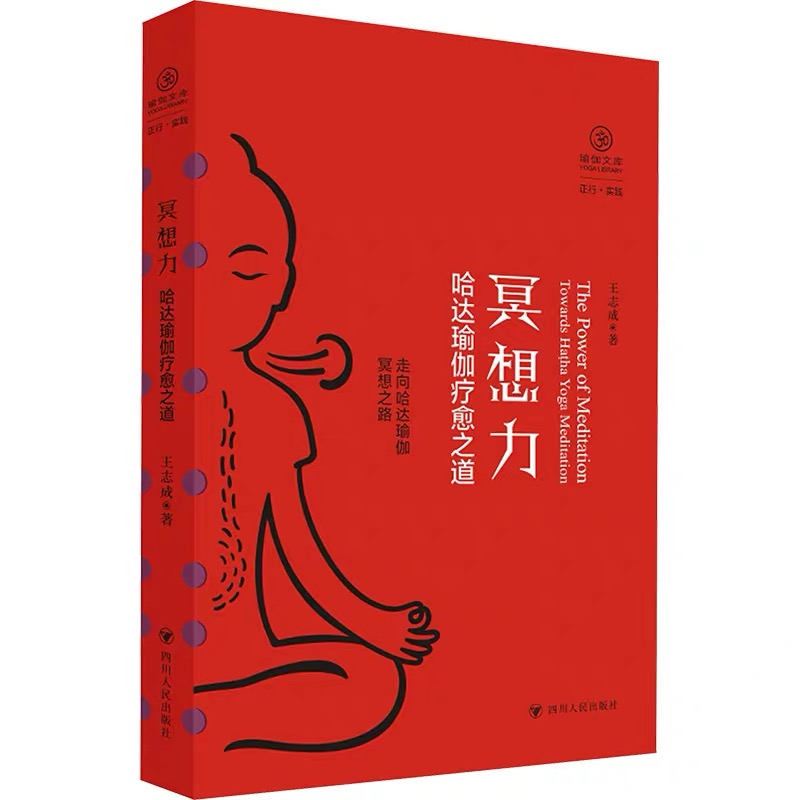
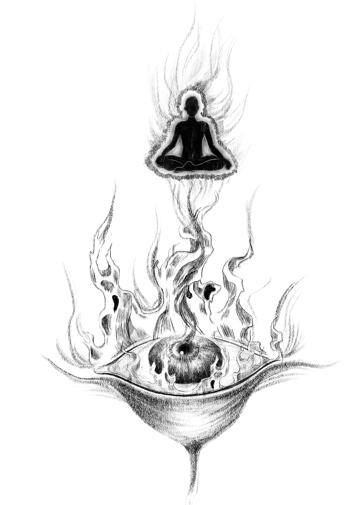
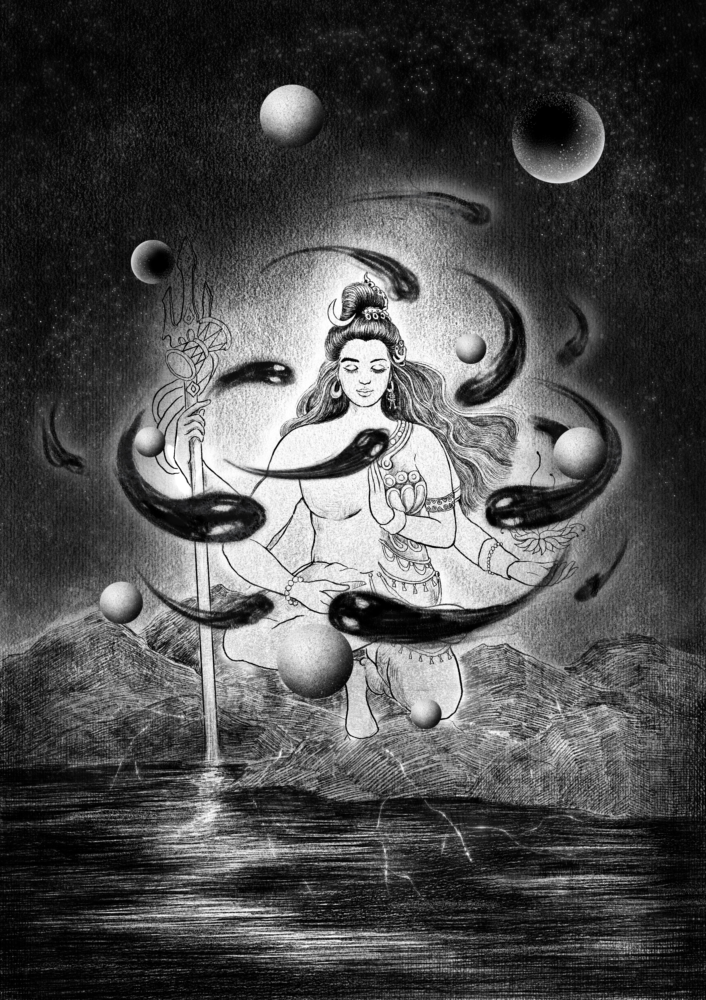
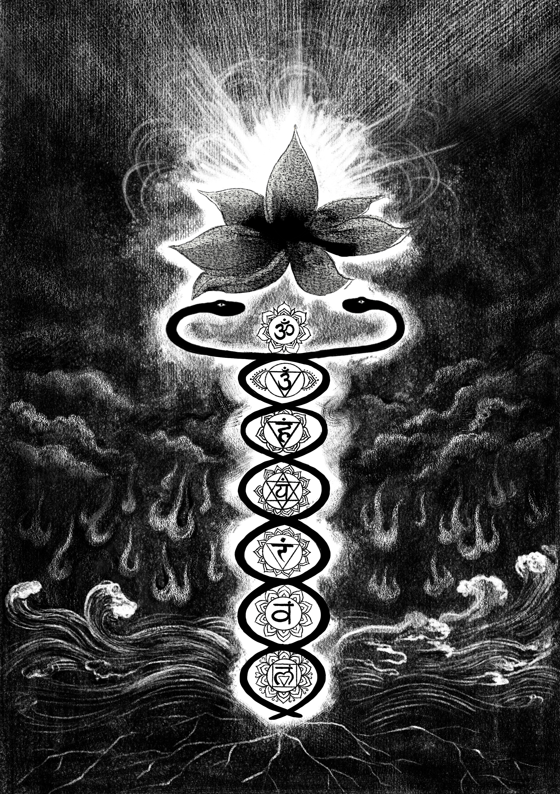
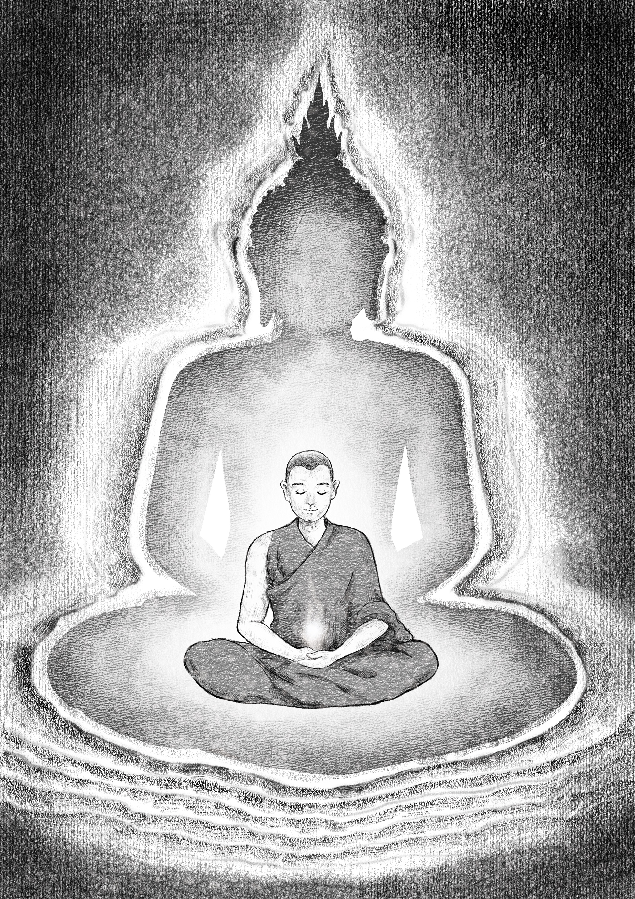

CHAPTER 01
第一章

MEDITATION / HATHA YOGA
接到《冥想力：哈他瑜伽疗愈之道》的文字稿后，我把阅读时浮现的内在画面，和自己参加葛印卡十日内观禅修的感受，整理成这一组黑白插画。

这些画不是简单的章节配图，而是我在文字、身体记忆和禅修经验之间看见的内在图像：念头像火焰升起，意识在深处展开，呼吸与脉轮、莲花、黑暗和光一起构成一条向内走的路。
CHAPTER 01

CHAPTER 02

CHAPTER 03

CHAPTER 04

CHAPTER 05
